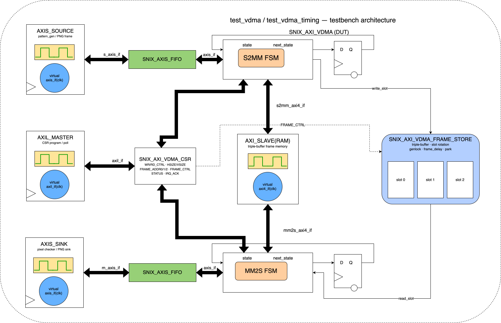
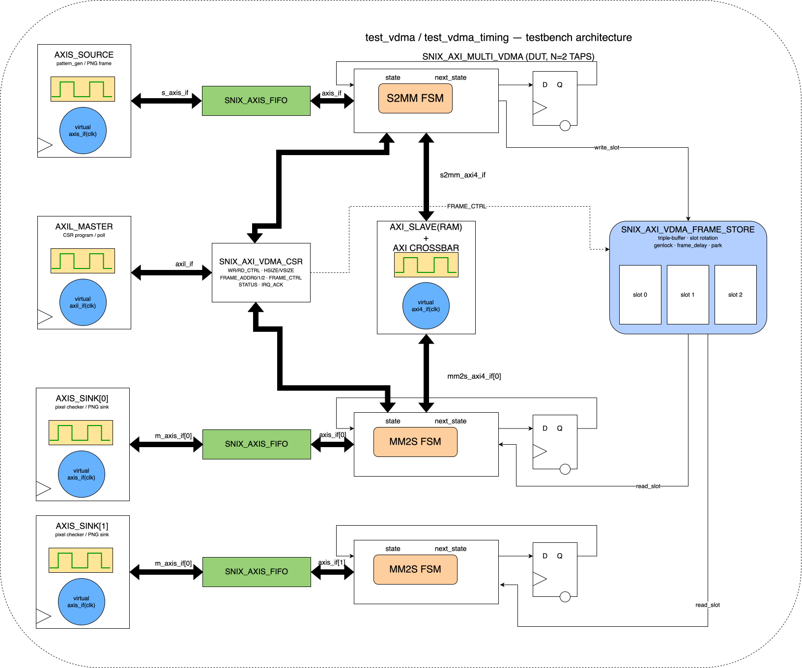
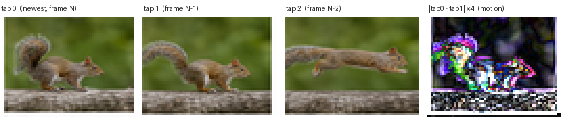

Motivation
In the previous post [7] we followed a single pixel from a camera onto an AXI-Stream bus. That is enough to move video, but not to do anything useful with it. The moment you want to store a frame, scale it, overlay it, or run a filter that looks at more than one pixel at a time, you need the whole frame sitting in memory — and a frame is far too big for on-chip RAM. A single 1080p frame is about 6 MB; you are not keeping that in block RAM.
So video frames live in DDR, and something has to shovel them in and out: capture writes incoming frames to memory, display reads them back. That component is the Video DMA. It is not a generic memory copier — it is a frame-level traffic manager that has to solve one specific problem that an ordinary DMA never faces: the writer and the reader are independent. They run on different clocks, at different rates, and neither will wait for the other. If they ever touch the same buffer at the same time, the screen tears.
This post takes snix_axi_vdma from verilaxi apart engine by engine, then shows how a small change to its frame store turns it into something more powerful: a multi-tap temporal VDMA that hands you several past frames at the same instant, which is exactly what temporal filters and motion detectors need.
Two engines, pointing in opposite directions
A VDMA is really two DMA engines [8] that share a pool of buffers:
- S2MM (stream to memory-mapped) — the capture engine. It takes an AXI-Stream of pixels and writes one frame into DDR over an AXI4 write master.
- MM2S (memory-mapped to stream) — the playback engine. It reads a frame from DDR over an AXI4 read master and presents it as an AXI-Stream to the display path.
Each engine is a small state machine that walks a frame one line at a time. The S2MM, for example, only accepts pixels when it is genuinely ready to write them, and that readiness is one expression:
assign s_axis_tready = fifo_s_tready && frame_busy &&
(state == ACTIVE) &&
(input_line < frame_vsize_lines);
Read it right to left and it tells you the whole contract. The engine only pulls a pixel when its internal line FIFO has room (fifo_s_tready), and a frame is in progress (frame_busy), and the FSM is in its active streaming state, and it has not already received all the lines it was told to expect. Drop any one of those and tready falls, which is how a downstream engine applies backpressure all the way back to the source without a single explicit control signal.
What makes it different from a plain DMA
It is worth being precise about why a VDMA is its own thing and not just an AXI DMA [8] with a video label. A plain DMA — and the related CDMA [8], which copies memory to memory — performs a one-dimensional transfer: a base address and a byte count. Bytes are contiguous; you point it at a buffer and it streams from start to end.
A frame is not contiguous. It is a two-dimensional object: a rectangle of HSIZE bytes by VSIZE lines, laid out in memory with a STRIDE — the distance from the start of one line to the start of the next — that is usually larger than the line itself, so each line begins on a clean address boundary. A VDMA therefore runs a nested loop the plain DMA never has: an outer loop over lines and an inner loop over bursts within a line, with an address that jumps by STRIDE at every line boundary. On top of that 2D address generator sit the three things a plain DMA has no concept of: a multi-buffer frame store, genlock, and frame-rate decoupling between writer and reader.
| Plain DMA | CDMA | VDMA | |
|---|---|---|---|
| Transfer shape | 1D, contiguous | 1D, contiguous | 2D: hsize × vsize, strided |
| Endpoints | stream ↔ memory | memory ↔ memory | stream ↔ memory, per frame |
| Address generation | linear | linear | per-line base + intra-line bursts |
| Buffering | one region | one region | triple buffer + age tracking |
| Sync | start/done | start/done | genlock, frame delay, park |
Table (1): a VDMA is a 2D, frame-aware DMA. The datapath primitives (bursts, outstanding requests, a line FIFO) are shared with the plain DMA; the addressing and the frame-level semantics are what is new.
The two state machines
The capture engine is the simpler of the two. It has three states, and it is “busy” from the moment a frame starts until the very last write response drains back:
| S2MM state | What it does |
|---|---|
IDLE | Wait for frame_start; latch base address, stride, geometry; flag config_error if hsize or vsize is zero. |
ACTIVE | Issue AW bursts and push W data from the line FIFO; advance the line address as each line completes; retire bursts as BRESP returns. |
ABORT | Entered on frame_stop or error; stop issuing new bursts but keep draining outstanding B responses so the bus is left clean. |
Table (2): the S2MM capture FSM. The frame is only declared done when the schedule is complete and every outstanding burst has been acknowledged.
The playback engine looks almost identical but has a fourth state, and that extra state is the whole reason reads are harder than writes:
| MM2S state | What it does |
|---|---|
IDLE | Wait for frame_start; latch geometry; round the line length up to a whole number of beats. |
ACTIVE | Issue AR bursts ahead of the consumer; returned R data lands in the line FIFO and drains to the AXI-Stream output. |
WAIT_OUTPUT | All addresses issued and all bursts returned, but the FIFO still holds pixels. Keep streaming until the last beat of the last line has actually left. |
ABORT | Entered on frame_stop or a bad RRESP; drain in-flight reads, then finish. |
Table (3): the MM2S playback FSM. The WAIT_OUTPUT state exists because a read engine’s address side runs far ahead of its data side.
Why does only the reader need WAIT_OUTPUT? Because the two engines are asymmetric in time. On the write side, issuing the address and pushing the data happen close together — when the last W beat with WLAST goes out, the frame is essentially written. On the read side, the engine deliberately issues all its AR addresses long before the corresponding R data comes back, and the display then drains that data slowly at its own rate. So “all reads issued” and “all pixels delivered” are two very different moments, sometimes thousands of cycles apart. The engine must not declare frame_done at the first; it waits, in WAIT_OUTPUT, for the second:
WAIT_OUTPUT: begin
if (output_complete) begin // last beat of last line has left
frame_busy <= 1'b0;
frame_done <= 1'b1;
state <= IDLE;
end
endTwo-dimensional address generation
A frame on the AXI side is pure geometry in bytes: HSIZE bytes per line, VSIZE lines, and a STRIDE from one line to the next. The byte address of any burst is therefore
addr(line, offset) = frame_addr + line × STRIDE + offset 0 ≤ offset < HSIZE (position inside the current line) STRIDE ≥ HSIZE (the slack is inter-line padding)
The address has two independent terms: a coarse one that steps by STRIDE per line, and a fine one that steps by the burst size within a line.
In the RTL this is two registers. next_write_addr walks the fine offset, advancing by the bytes just issued; line_addr holds the start of the current line and jumps by STRIDE only when a line finishes:
if (aw_fire) begin
next_write_addr <= next_write_addr + burst_bytes; // fine: within a line
if (remaining_after_burst == 0) begin // line finished
line_bytes_remaining <= frame_hsize_bytes; // reload the line
line_addr <= line_addr + frame_stride; // coarse: next line
next_write_addr <= line_addr + frame_stride;
end
end
This is exactly the nested loop a plain DMA never runs. Note the reload: line_bytes_remaining resets to HSIZE at every line, and the base jumps by STRIDE, not by HSIZE — the difference between the two is the padding that keeps each line aligned. One small asymmetry between the engines hides here: the reader rounds the line length up to a whole number of beats (aligned_line_bytes) so it always fetches complete beats, while the writer keeps the exact byte count and trims the final beat with WSTRB. Reads are beat-aligned; writes are byte-exact.
Sizing a burst: the 4 KB rule
Within a line the engine wants the longest legal burst it can issue, because long bursts amortise the address-phase overhead. Three limits decide the actual length, and the hardware simply takes the smallest:
max_burst_bytes = (burst_len + 1) × 2^beat_size // the programmed cap bytes_to_4k = 4096 − (addr mod 4096) // distance to the next 4 KB line line_remaining = bytes left in the current line burst_bytes = min(max_burst_bytes, bytes_to_4k, line_remaining) burst_len_out = ceil(burst_bytes / bytes_per_beat) − 1 // the AWLEN/ARLEN value
The middle term is the one beginners forget: AXI4 [9] forbids a burst from crossing a 4 KB address boundary [2], because that is the granularity at which addresses may be remapped downstream. If a burst would straddle a 4 KB line, it must be split at the boundary. The RTL computes the distance to the next boundary and clamps to it:
assign bytes_to_4k = (max_burst_bytes + next_write_addr[11:0] >= 4096)
? (4096 - next_write_addr[11:0]) // would cross: clamp
: max_burst_bytes; // fits: no clamp
always_comb begin
burst_bytes = max_burst_bytes;
if (bytes_to_4k < burst_bytes) burst_bytes = bytes_to_4k;
if (line_bytes_remaining[14:0] < burst_bytes) burst_bytes = line_bytes_remaining[14:0];
burst_awlen = compute_next_len(burst_bytes, beat_size); // bytes -> AWLEN
end
compute_num_bytes turns an (AWLEN, AWSIZE) pair into a byte count by the identity (len+1) << size; compute_next_len does the inverse, dividing a byte count by the beat width and subtracting one. They are the two halves of the same conversion, and keeping them exact is what lets the engine emit a legal AWLEN for any geometry, including the ragged final burst of a line.
Pipelined bursts: hiding memory latency
A single burst, issued and then waited on, would leave the bus idle for the entire memory round-trip. The fix is to keep several bursts in flight: issue the next address while earlier data is still arriving. Both engines cap this at four outstanding bursts, but the read engine needs one extra piece of bookkeeping, because read data arrives unbidden and must have somewhere to land.
The MM2S therefore runs a credit system against its line FIFO. Every time it issues a read it reserves the beats that read will eventually return; every time a beat leaves the output it releases one. It refuses to issue a read whose data would not fit:
// reserve on issue, release on output
reserved_beats_next = reserved_beats
+ (ar_fire ? burst_beats : 0)
- (output_fire ? 1 : 0);
// only issue if it still fits the FIFO, and < 4 bursts are in flight
assign can_issue_ar = frame_busy && !schedule_complete && !ar_gap &&
(line_bytes_remaining != 0) &&
(outstanding_bursts < MAX_OUTSTANDING) &&
(reserved_beats + burst_beats <= FIFO_DEPTH - 1);
That last line is the whole prefetch policy in one inequality. It guarantees the FIFO can never overflow — the engine never promises more beats than it has room for — while still running as far ahead as the FIFO allows. To actually hide the latency, the beats kept in flight must cover the memory round-trip. If the read latency is L cycles and each burst is B beats, then with N outstanding bursts you have up to N × B beats buffered, so sustained full bandwidth needs
N × B ≥ L and FIFO_DEPTH ≥ N × B
With N = 4 and a 16-beat burst that is 64 beats of slack — comfortably more than a typical on-chip memory latency, which is why the engine can keep the data path busy. On real DDR, where L is larger and variable, this same inequality is the dial you turn: deeper FIFO, longer bursts, or more outstanding requests.
The heart of it: the triple-buffer frame store
Now the real problem. The writer is filling a frame while the reader is emptying one. If they share a single buffer, the reader will display a frame that is half-overwritten — the top of one frame and the bottom of the next, with a visible horizontal seam. That seam is tearing [1].
The classic fix is more buffers. With three slots the writer can always be filling one buffer, the reader can always be draining another, and there is a third spare so the two never collide even when their rates drift — the same triple-buffer and genlock model that Xilinx’s AXI VDMA uses [3]. The frame store is the bookkeeper that rotates the writer through the slots while steering it away from whatever the reader is touching, and tracks which slot holds the newest finished frame (newest_complete_slot).
Choosing which slot the reader plays back is a three-way priority, and the whole policy fits in one combinational block:
delayed_candidate = delayed_slot(newest_complete_slot, frame_delay);
if (park_mode && (park_slot <= 2'd2) && valid_slots[park_slot])
rd_candidate = park_slot; // 1. park: freeze on a fixed buffer
else if (valid_slots[delayed_candidate])
rd_candidate = delayed_candidate; // 2. run N frames behind newest
else if (valid_slots[newest_complete_slot])
rd_candidate = newest_complete_slot; // 3. otherwise, show the newest
else
rd_candidate = read_slot; // nothing new yet: holdThree behaviours fall out of those four lines. Park mode nails the reader to one slot — a freeze-frame, or a diagnostic still. Frame delay lets the reader deliberately run zero, one, or two frames behind the newest capture, which gives the downstream pipeline breathing room before the writer is allowed to reclaim a buffer. And if nothing newer is ready, the reader simply holds its current slot rather than showing garbage.
Genlock: why playback waits for capture
Frame delay decides which slot; genlock decides when playback is allowed to advance. With genlock enabled, the MM2S does not restart a frame on its own schedule — it restarts only after the S2MM signals that a new capture frame has completed. Capture becomes the metronome and display follows it, so the two are locked in step and a half-written buffer can never be selected for display. This is the difference between a demo that looks fine on a logic analyser and one that looks fine on a monitor.
Telling you when it goes wrong
Because the writer and reader are independent, a real system will occasionally misbehave, and the VDMA is honest about it. It keeps small saturating counters for the three things that actually matter:
- overwrite — the writer caught up to an unread buffer (the reader is too slow),
- underrun — the reader needed a frame that was not ready (the writer is too slow),
- sync-loss — a genlock event arrived while the reader was mid-frame.
On top of that, any non-OKAY AXI response (BRESP/RRESP) sets a sticky fault flag, and a frame that faulted mid-write is suppressed — it is never published to the frame store, so the reader will never latch onto a corrupt buffer. The whole status surface is mirrored into one read-only register.
The register map
Software drives all of this through a 16-register AXI-Lite register bank [10]. The control plane is small on purpose — geometry, three buffer addresses, and a control word per direction.
| Offset | Register | Purpose |
|---|---|---|
0x00 / 0x0C | WR_CTRL / RD_CTRL | start / stop / circular, AXI beat size and burst length |
0x08 / 0x14 | WR_STRIDE / RD_STRIDE | line stride in bytes |
0x1C / 0x20 | WR_HSIZE / WR_VSIZE | capture geometry (bytes per line, lines) |
0x24 / 0x28 | RD_HSIZE / RD_VSIZE | playback geometry |
0x2C … 0x34 | FRAME_ADDR0..2 | the three buffer base addresses |
0x18 | STATUS | read-only: busy/done, slots, genlock, telemetry counters |
0x38 | FRAME_CTRL | frame-store enable, genlock, frame_delay, park, IRQ enables |
0x3C | IRQ_ACK | acknowledge interrupt / clear faults / clear telemetry |
Table (4): the snix_axi_vdma register map. FRAME_CTRL is where the personality of the engine is set — bit 0 enables the triple buffer, bit 4 enables genlock, bits [6:5] set the frame delay, and bits [3:1] select park mode and slot.
Bringing it up in frame-store mode with genlock is just a handful of writes — addresses, geometry, then arm both engines:
write_reg(FRAME_ADDR0, 0x1000_0000);
write_reg(FRAME_ADDR1, 0x1010_0000);
write_reg(FRAME_ADDR2, 0x1020_0000);
write_reg(WR_HSIZE, 1920*BPP); write_reg(WR_VSIZE, 1080);
write_reg(RD_HSIZE, 1920*BPP); write_reg(RD_VSIZE, 1080);
write_reg(FRAME_CTRL, FRAME_STORE_EN | GENLOCK_EN | FRAME_DELAY(0) | IRQ_WR);
write_reg(WR_CTRL, BURST16 | BEAT8 | CIRCULAR | START);
write_reg(RD_CTRL, BURST16 | BEAT8 | START);Put the engines, the frame store, and the CSR together and this is the block that results — capture on the top lane, playback on the bottom, the shared triple buffer in the middle:
{kind=link}

Figure (1):snix_axi_vdma. The S2MM FSM writes captured frames into the shared frame memory; the MM2S FSM reads them back; the frame store decides which slot each engine touches, and the CSR programs genlock, frame delay and park through FRAME_CTRL.
Why read several frames at once: temporal filters
Everything so far moves one frame. But a whole class of video algorithms is defined over time: the output pixel depends not just on the current frame but on the same pixel in previous frames. These are temporal filters, and in general they compute
y(x, t) = f( I(x, t), I(x, t-1), I(x, t-2), ... )
The family is large and useful. Temporal denoising averages a pixel across consecutive frames, which beats spatial blur because it does not soften edges — static detail reinforces while noise, being uncorrelated in time, cancels. Motion detection subtracts consecutive frames: whatever is still vanishes, whatever moved lights up. Frame-rate conversion interpolates a synthetic frame between two real ones. 3D noise reduction (3DNR), found in nearly every ISP, blends a spatial filter with a temporal one. All of them share a hard requirement: they need frame N, frame N−1, and sometimes N−2 at the same instant, pixel-aligned — pixel (x,y) of each frame arriving together, in the same scan order.
A single VDMA cannot do this. It exposes exactly one frame at a time. You could bolt on external line buffers, but for full frames that is megabytes of storage you do not have on chip. The clean answer is to reuse the buffers already sitting in DDR: the frame store is already keeping several recent frames alive: it just needs to hand out more than one of them at once.
The frame buffers
For N taps the store holds N+1 physical buffers in memory (FRAME_ADDR0 … ADDR_N). At any moment one buffer is being written and up to N are being read, which is why there must be one more buffer than taps: the +1 is the spare that guarantees the writer always has somewhere to go that no reader is touching. The buffers themselves never move. What rotates is the role each buffer plays — writer, newest, previous, oldest — and that role assignment is the job of two cooperating schedulers.
The slot schedulers
The write scheduler picks the next buffer to fill. The rule is one line: advance to the next slot that no tap has locked.
function automatic logic [1:0] next_wr_slot(input logic [1:0] current,
input logic [3:0] locked);
logic [1:0] c;
c = (current == NS-1) ? 0 : current + 1; // step forward, wrapping
if (locked[c]) c = (c == NS-1) ? 0 : c + 1; // skip a locked slot
if (locked[c]) c = (c == NS-1) ? 0 : c + 1; // (unrolled so Yosys
if (locked[c]) c = (c == NS-1) ? 0 : c + 1; // can elaborate it)
next_wr_slot = c;
endfunctionThe read scheduler is an age queue — a tiny shift register of slot indices, ordered newest-first. When a capture completes, the just-finished slot enters at position 0 and everything older shifts down by one:
if (wr_frame_done) begin
valid_slots[write_slot] <= 1'b1;
overwrite_event <= valid_slots[write_slot]; // reader fell behind
for (int i = NUM_TAPS-1; i > 0; i--) begin
age[i] <= age[i-1]; // shift the queue down
valid_age[i] <= valid_age[i-1];
end
age[0] <= write_slot; // newest frame enters at the head
valid_age[0] <= 1'b1;
write_slot <= next_wr_slot(write_slot, slot_read_locked);
end
With the queue in place, the address each tap reads is simply the slot sitting at its age position — tap i reads age[i]. That one indirection is the whole temporal trick:
tap 0 = age[0] = newest complete frame (frame N)
tap 1 = age[1] = previous frame (frame N-1)
tap N-1 = age[N-1] = oldest retained frame (frame N-(N-1))
rd_frame_addr[i] = frame_addr[ age[i] ]; // tap i -> its aged slotThe two schedulers are coupled by a per-tap lock. While a tap is reading, it pins its slot so the write scheduler cannot reclaim it mid-read; the lock is taken when the tap starts and released only when it finishes:
if (rd_frame_start[i] && valid_age[i]) begin
tap_rd_lock[i] <= 1'b1;
rd_locked_slot[i] <= age[i]; // tap i pins the frame at its age
end else if (rd_frame_done[i]) begin
tap_rd_lock[i] <= 1'b0; // released only when the read finishes
end
That lock is the one sharp edge. Because the hardware is elaborated for a fixed number of taps, a start pulse fires every tap. If your design consumes only some of them and leaves the others' tready low, those taps never finish, never release their lock, and eventually starve the writer of a free slot. The rule is simple: if a tap is enabled, you must drain it. An undriven tap is not free — it is a held buffer. One more guard completes the picture: rd_taps_available only rises once all N ages are valid, so the taps cannot start handing out frames until the store has actually captured N distinct ones.
Getting N engines
The read side is then just the single-VDMA MM2S, replicated. There is no special multi-port read engine — the top level instantiates N ordinary snix_axi_vdma_mm2s blocks in a generate loop, and wires tap i to its aged address from the scheduler:
generate
for (genvar i = 0; i < NUM_TAPS; i++) begin : g_mm2s
// each tap reads the slot the age queue assigned to it
assign tap_rd_addr = rd_frame_addr_flat[i*ADDR_WIDTH +: ADDR_WIDTH];
snix_axi_vdma_mm2s #(.DATA_WIDTH(DATA_WIDTH), ...) u_mm2s (
.frame_start(rd_frame_start[i]),
.frame_addr (tap_rd_addr),
.m_axis_tdata(m_axis_tdata[i*DATA_WIDTH +: DATA_WIDTH]),
.mm2s_araddr (mm2s_araddr [i*ADDR_WIDTH +: ADDR_WIDTH]),
... // one full AXI4 read master per tap
);
end
endgenerate
Each tap therefore brings its own line FIFO, its own 4-deep outstanding-read pipeline, and its own AXI-Stream output — everything from the single-VDMA section, N times over. The N read masters plus the one write master are arbitrated onto the single memory by an external AXI crossbar [11]. All the array ports are flat-packed (element i at [i*W +: W]) so the whole thing still elaborates cleanly through Yosys. Changing NUM_TAPS from 1 to 3 is a one-parameter change; the schedulers, the lock aggregation, and the generate loop all scale with it.
{kind=link}

Figure (2):snix_axi_multi_vdma with two taps. The capture side is unchanged from the single VDMA; the read side fans out into N independent MM2S masters, each with its own AXI-Stream output, arbitrated onto the memory by an AXI crossbar. read_slot now resolves per tap, by age.
How fast can it go?
The ceiling is one beat per clock. With a DATA_WIDTH-bit data path running at the AXI clock, the peak bandwidth is
BW_peak = (DATA_WIDTH / 8) × f_AXI 64-bit @ 200 MHz = 8 × 200e6 = 1.6 GB/s per engine
A frame needs a fixed number of useful beats — ceil(HSIZE / bytes_per_beat) × VSIZE — and the engine’s job is to deliver them in as few cycles as possible. Real efficiency is therefore
η = useful_beats / total_cycles = 1 / (1 + bubbles / useful_beats)
The bubbles come from three places, and naming them tells you how to shrink them. First, the address handshake leaves a one-cycle gap after each AW/AR fire (aw_gap/ar_gap in the RTL), so addresses go out at most every other cycle — harmless as long as bursts are long enough that data keeps flowing in between. Second, every line boundary costs a short turnaround while the address jumps by STRIDE and the first beats of the new line are fetched. Third, if the FIFO ever runs dry at a burst boundary the output stalls until it refills. All three shrink with longer bursts and a deeper FIFO, which is exactly the N × B ≥ L lever from the previous section.
In simulation against a behavioural memory the MM2S sustains about 88% and the S2MM about 86% of peak on a 64×32 frame — the missing fraction is almost entirely per-line and per-burst turnaround, not a structural stall. Those numbers are an optimistic bound: the model answers reads instantly, so they isolate the engine from memory behaviour. On real DDR the latency L grows and varies, and the same efficiency equation, with the same three bubble terms, is what you tune against.
Proving it with a squirrel
A block diagram is a promise; a round-trip is proof. Using its task-based AXI BFMs [12] inside a Verilator harness [13] — with the streams wrapped in SVA protocol checkers [14] — verilaxi drives six real frames of the running squirrel through the capture path, lets the multi-tap VDMA stage them, and reads all the taps back out byte-for-byte. Because each tap is locked to a different age, on any given round the three taps return three consecutive frames of the animation — and subtracting two adjacent taps lights up exactly the pixels that moved:
{kind=link}

Figure (3): the three taps on one round — frame N, N−1, N−2 — and the amplified difference of the first two. The bright regions are the squirrel's moving limbs and tail; the still background subtracts to black. That image is motion detection, produced for free by reading two taps of the same VDMA.The same test also instruments throughput. Reading a tap, the engine reports two efficiency numbers: a steady window (first delivered beat to last) and a total window (from the read request). In simulation the steady efficiency sits around 80% — the MM2S bubbles for a beat or so at each line and burst boundary while the FIFO refills, which is real RTL behaviour, not a frame-sized gap. The startup latency reads as zero only because the behavioural memory model answers instantly; on real DDR that gap is where the next round of optimisation lives. Being able to see that distinction, per frame, is the point of building the instrumentation into the test.
A baseline for Lucas–Kanade optical flow
That difference image in Figure 3 is not just a pretty demo — it is the first term of a real algorithm. Lucas–Kanade [4] is the classic method for optical flow: estimating, per pixel, the motion vector (u, v) between two frames. It rests on the brightness-constancy assumption [5] — a moving point keeps its intensity — which linearises into the optical-flow constraint
Ix · u + Iy · v + It = 0
Here Ix and Iy are the spatial gradients (how brightness changes left-to-right and top-to-bottom within a frame) and It is the temporal gradient (how brightness changes between frames). One equation has two unknowns, so Lucas–Kanade assumes the flow is constant over a small window around each pixel and solves the resulting over-determined system by least squares — a 2×2 normal-equation solve built from sums of Ix, Iy and It products over the window. Inverting that 2×2 matrix comes down to a reciprocal of its determinant — exactly the fixed-point divider [15] (and its sibling square root [16], for the eigenvalue corner test) that the earlier posts build:
[ ΣIx² ΣIxIy ] [ u ] = - [ ΣIxIt ] [ ΣIxIy ΣIy² ] [ v ] [ ΣIyIt ]
Now look at where the data comes from. The spatial gradients Ix, Iy are computed inside a single frame — a Sobel-style spatial difference [17], exactly the kind of operator covered in the earlier posts. The temporal gradient is
It(x, y) = I(x, y, t) - I(x, y, t-1) = tap0(x,y) - tap1(x,y)
which is precisely tap0 − tap1 — the difference image the multi-tap VDMA produced for free. This is the point of the whole exercise: an optical-flow engine spends most of its hardware budget not on arithmetic but on getting two time-aligned frames to the same pixel at the same cycle. The multi-tap VDMA is that front-end. It delivers I(t) and I(t−1) — and I(t−2) for a higher-order temporal derivative or a coarser pyramid level — pixel-aligned and in lockstep, so the gradient computation and the 2×2 solve can stream straight off the taps with no external frame buffering. Build the taps once and you have the data-delivery baseline for Lucas–Kanade, for 3DNR, for motion-compensated interpolation, and for any other temporal filter you care to put downstream. That is the next thing to build on top of this.
Closing
A VDMA is what turns a stream of pixels into a frame buffer you can actually compute on. The single engine solves tearing with three buffers, genlock and frame delay; the multi-tap version reuses those same buffers to hand you the recent past, turning “store a frame” into “remember the last few frames” almost for free. Everything here — the engines, the frame store, the temporal taps, and the squirrel round-trip — is open source in verilaxi [6], with a fuller written reference in VIDEO.md.
References
[1] Keith Jack. Video Demystified: A Handbook for the Digital Engineer. Elsevier, 2011.
[2] ARM. AMBA AXI and ACE Protocol Specification (IHI 0022), AXI4. 2011.
[3] Xilinx. AXI Video Direct Memory Access (AXI VDMA) LogiCORE IP Product Guide, PG020.
[4] B. D. Lucas and T. Kanade. An Iterative Image Registration Technique with an Application to Stereo Vision. Proc. IJCAI, 1981.
[5] B. K. P. Horn and B. G. Schunck. Determining Optical Flow. Artificial Intelligence 17, 1981.
[6] verilaxi — a Verilator-friendly SystemVerilog video & DMA library. github.com/nelsoncsc/verilaxi
[7] Nelson Campos. Video basics for hardware engineers.
[8] Nelson Campos. AXI DMA and CDMA.
[9] Nelson Campos. AMBA AXI handshake basics.
[10] Nelson Campos. AXI-Lite CSR/register bank design.
[11] Nelson Campos. AXI arbiter and crossbar basics.
[12] Nelson Campos. Building SystemVerilog AXI VIP.
[13] Nelson Campos. Verilator testbenches.
[14] Nelson Campos. SVA Protocol Checkers for AXI.
[15] Nelson Campos. Division in hardware.
[16] Nelson Campos. Square root in hardware.
[17] Nelson Campos. Sobel edge detector.
Also available in GitHub.